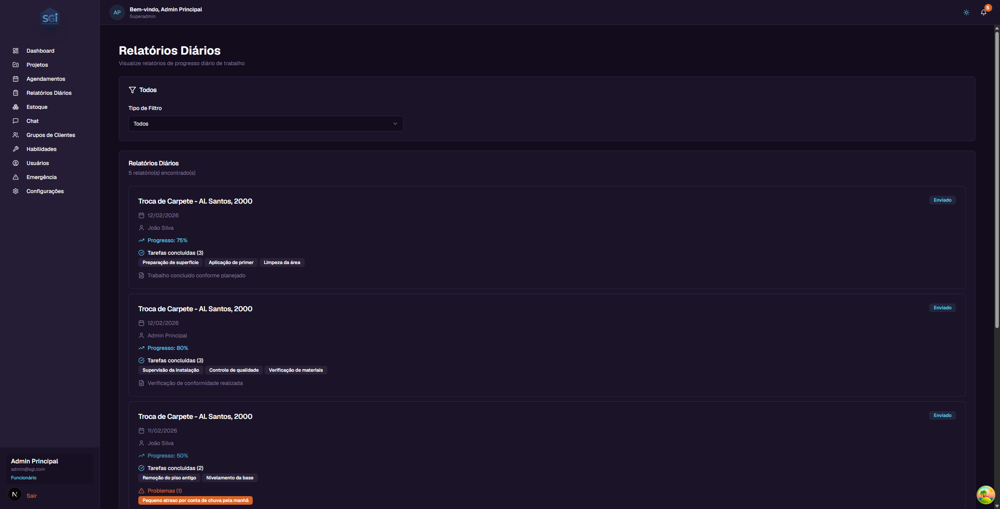

Daily Reports - User Guide¶
This guide explains how the Daily Reports module in SGI works. Reports are used to track the daily progress of field work.
1. Accessing Daily Reports¶
On the left sidebar menu, click "Relatórios Diários" (Daily Reports).

2. How reports work now¶
Unlike previous versions, daily reports are now filled in directly in the SGI interface — not through the Chat. The Chat no longer creates reports automatically.
What changed:
- Reports are created and filled in via the UI (form)
- Every report is submitted immediately upon creation — there is no longer a draft status
- An employee can create multiple reports on the same day (e.g., morning and afternoon)
- Editing is always allowed (no 24-hour window): the creator or admin/superadmin can edit at any time
- Report cards in the list open the form in edit mode when clicked
3. Report structure¶
Each report is composed of:
Template responses (if a template is linked)¶
If the project has a Report Template linked, the form presents the fields defined in that template (text, number, date, photo, WO service checklist, etc.).
📖 See the Report Templates Guide to understand how templates work.
No template = basic form
If the project has no template linked, the report shows only the universal fields: General notes and General photos.
Always-present fields¶
Regardless of the template, every report has:
| Field | Description |
|---|---|
| General notes | Free-form observations about the day's work |
| General photos | Progress images (outside the template) |
service_checklist (special field)¶
If the template includes a "Service Checklist" field, the form automatically displays the items from the project's Work Order. The employee marks each item as completed.
Items removed from the WO
If a WO item is removed after the report was created, it still appears in the checklist with a "Removed from WO" badge — the original name is preserved by snapshot. This ensures the history remains intact.
4. Creating a report¶
- On the sidebar, click "Relatórios Diários" (Daily Reports)
- Click "+ Novo Relatório" (+ New Report)
- Select the project (if not pre-selected)
- Fill in the template fields (if any) and the general notes
- Add photos if needed
- Click "Enviar" (Submit)
The report is saved and submitted immediately.
Multiple reports on the same day¶
You can create more than one report for the same project on the same day. There is no "one per day" restriction. This is useful for:
- Morning report and afternoon report
- Reporting issues found separately from normal progress
- Correcting or supplementing without editing the original
5. Editing a report¶
To edit an existing report:
- Click the report card in the list
- The form opens in edit mode
- Change the desired fields
- Save
Who can edit
- The report creator can edit at any time
- Admin and superadmin can edit any report
- Each edit records an event in the project timeline with the changed fields
Validation only on create/edit
Fields marked as "required" in the template are only validated when creating or editing. If the template is changed after the report was created (e.g., a field removed), the old report is not invalidated — it remains valid as-is.
6. Photos in the report¶
Photos can be added both in the template's photo fields and in the report's general photos.
- Photos are stored at
daily-reports/{userId}/{reportId}/{photoId}in Storage - When a report is deleted, photos are removed automatically (cascade delete via trigger)
7. Available filters¶
| Filter | Options | What it does |
|---|---|---|
| Filter Type | All / By Project / By User | Changes the main criterion |
| By Project | Projects dropdown | Lists only reports from the selected project |
| By User (admin) | Users dropdown | Lists only reports from the employee |
Visibility by role
- Administrators/Super Admins: See all reports + filter by user
- Employees: See only their own reports
8. Reports in the project tab¶
Each report also appears in the "Relatorios" (Reports) tab of the corresponding project, allowing you to view the entire progress history in one place.
Important Rules¶
Fields and structure¶
| Field | Required | Note |
|---|---|---|
projectId |
Yes | Project must exist |
userId |
Yes | Authenticated user |
reportDate |
Yes | Auto-filled (current date) |
responses[] |
Per template | Fields from the report template |
generalNotes |
No | Free-form notes — always present |
generalPhotos[] |
No | General photos — always present |
Required permissions¶
| Operation | Super Admin | Admin | Employee |
|---|---|---|---|
| Create report | Yes | Yes | Yes |
| See own reports | Yes | Yes | Yes |
| See everyone's reports | Yes | Yes | No |
| Filter by user | Yes | Yes | No |
| Edit any report | Yes | Yes | Own only |
| Delete report | Yes | Yes | No |
Validations that block¶
Required vs. optional template fields
Fields marked as required in the template prevent submission if left empty. Optional fields can be left blank.
System defaults¶
| Setting | Value | Note |
|---|---|---|
| Status | Submitted immediately | No draft status exists anymore |
| Multiple per day | Allowed | No "one per day" restriction |
| Editing | Always allowed | No time window |
| Photos | Path in Storage | Cascade delete when report is removed |
Quick summary¶
| You want to... | Do this... |
|---|---|
| See all reports | "Relatorios Diarios" (Daily Reports) menu |
| See reports for a project | Filter "By Project" OR go to the "Relatorios" tab of the project |
| See reports from an employee | Filter "By User" (admin) |
| Create a report | Daily Reports > "+ Novo Relatório" > fill in > Submit |
| Edit a report | Click on the report card |
| Link a template to a project | Edit project > "Report Template" dropdown |